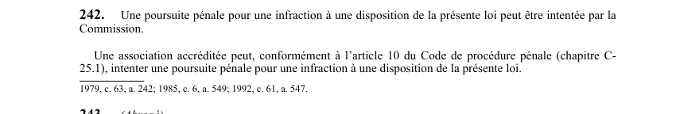

art-242.2-LSST : deuxième alinéa de l'article 242 (poursuite pénale intentée par une association accréditée)
Un article du wiki ⚖️ Recueil législatif
En bref
« art. 242.2 LSST » ne désigne pas un article autonome : c'est le deuxième alinéa de l'article 242, qui répartit la qualité pour intenter une poursuite pénale. L'article compte deux alinéas et aucun paragraphe numéroté. Cette disposition est en vigueur.
- Une association accréditée peut elle aussi intenter une poursuite pénale pour une infraction à une disposition de la LSST.
- Elle n'a pas à obtenir l'aval de la Commission : c'est une voie autonome, utile lorsque la Commission ne poursuit pas.
- Fondement procédural : l'article 10 du Code de procédure pénale (chapitre C-25.1), qui encadre la poursuite par un poursuivant privé.
- La portée est la même qu'au premier alinéa : toute infraction à une disposition de la loi.
- Il s'agit d'une faculté et non d'une obligation de poursuivre.
- Visé : association accréditée · Nature : faculté.
🌐 LegisQuébec · 📄 PDF officiel (page 69)
Texte officiel : capture du PDF
{kind=link}

Toucher l'image pour l'agrandir🔗 Ouvrir a cette page : LSST.pdf : page 69 · texte a jour au 26 mars 2024
Repères : où lire la disposition
- ➡️ Texte complet : art. 242 LSST : qui peut poursuivre au pénal, second des deux alinéas.
- Le texte officiel à jour au 26 mars 2024 ne comporte aucun article portant le numéro 242.2 : la loi passe de l'article 242 à l'article 243. La LSST signale les articles retirés par la mention « (Abrogé) », employée par exemple aux articles 243 et 243.1, et cette mention n'apparaît nulle part pour le numéro 242.2.
- Forme de citation à privilégier dans une nouvelle note : « art. 242, al. 2 LSST ».
Voir aussi
- art. 242 : qui peut poursuivre au pénal · faculté : une poursuite pénale pour infraction à la loi peut être intentée par la Commission ou, conformément à l'article 10 du Code de procédure pénale, par une association accréditée.
- art. 242.1 : premier alinéa de l'article 242, poursuite par la CNESST · renvoi : ce numéro désigne le premier alinéa de l'article 242 (poursuite pénale intentée par la Commission), toujours en vigueur.
- art. 241 : responsabilité dirigeants personne morale · disposition pénale : lorsqu'une personne morale commet une infraction, tout administrateur ou dirigeant qui a prescrit, autorisé ou consenti à l'acte constitutif de l'infraction est réputé y avoir participé et est passible de la même peine qu'une personne physique.
- ⚖️ Loi de procédure : Code de procédure pénale (chapitre C-25.1), article 10.
- ↑ Loi : LSST
Pages qui pointent ici (4)
- art-242-LSST : qui peut poursuivre au pénal Recueil législatif
- art-242.1-LSST : premier alinéa de l'article 242 (poursuite pénale intentée par la CNESST) Recueil législatif
- Infractions et sanctions SST Droit du travail
- LSST : Chapitre VIII : Pénalités et infractions Recueil législatif